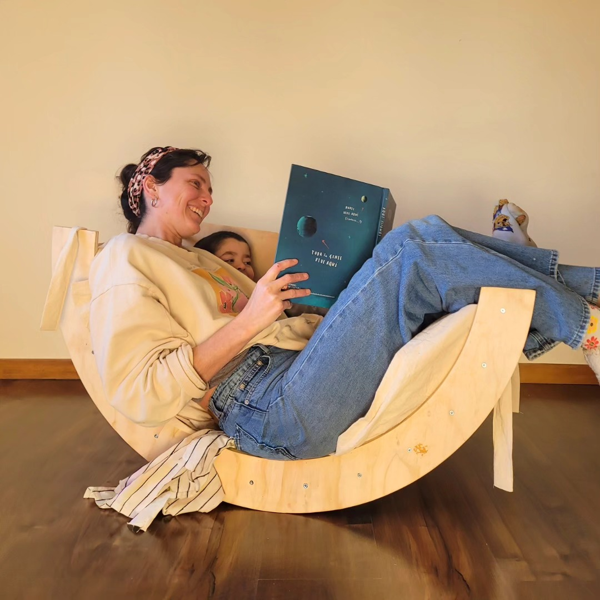

MURTA
Murta nació del sueño de Daniela, una madre de tres hijos llena de energía y creatividad. Junto a su
esposo, decidieron dar un paso valiente: invertir en una router CNC, una herramienta capaz de
transformar simples planchas de madera en piezas únicas y llenas de vida.
Al principio, la máquina era solo una idea, una apuesta arriesgada en medio de la rutina familiar.
Pero pronto, con paciencia, esfuerzo y muchas horas de aprendizaje, comenzaron a dar forma a un
proyecto que uniría lo mejor de ellos: la pasión por crear y el deseo de entregar algo especial a
los demás.
En el taller familiar, entre risas de los niños y el sonido constante de la madera siendo cortada,
Murta fue tomando identidad. Cada diseño se realiza a pedido, pensado en quienes buscan objetos
personalizados, cálidos y con un toque artesanal.
Más que un emprendimiento, Murta es una historia de familia, trabajo en equipo y amor por lo hecho a
mano. Cada pieza que sale del taller no solo lleva el sello de Daniela y su esposo, sino también el
espíritu de un hogar que decidió transformar la madera en recuerdos duraderos.